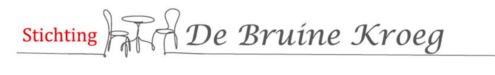

Hieronder een overzicht van evenementen die aansluiten bij de doelstellingen van Stichting De Bruine Kroeg.
De Dag van de Bruine Kroeg is een jaarlijks evenement waarbij het traditionele café in Amsterdam centraal staat.
Meer informatie: https://dagvandebruinekroeg.nl/
Opmerkingen over afgeronde evenementen of aanmeldingen voor nieuwe evenementen kunnen worden gestuurd naar coördinator CCC (mailadres).